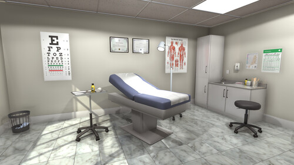
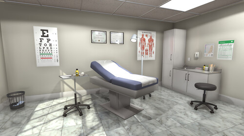
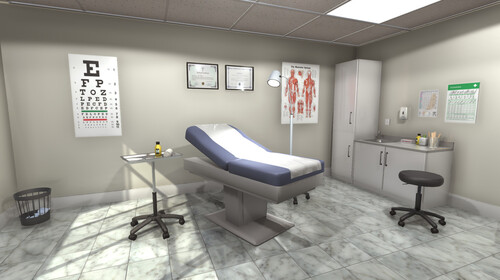

William Wu
William Wu is a current student enrolled in University of California, Riverside. He is majoring in Biology and considering doing a double major or minor. He is set on becoming a doctor and is following the premed route, just like many other biology majors. His main goal right now is to get good grades and enjoy life while he still can. He enjoys eating, sleeping, and playing video games. However, he mostly enjoys spending time with friends.
William is fascinated by biology and the intricacies of the human body. While Organic Chemistry is absolutely horrible and William hates it, he loves genetics and other biology-related courses. He has taken up working in labs to further help those around him and has had two published papers. As an Asian American, he wants to focus on the issues that affect his community, ones that are often overlooked or underfunded. The two papers are focused around Hepatitis B, a disease that impacts Asian Americans more than others. He also has work experience in a doctor’s office as both a shadow and an assistant. In doing so, he has gained the understanding of how important communication is in the medical field. Furthermore, he has learned how tiring it truly is to be a doctor. Each patient only gets to see the doctor for a few minutes and the doctor’s mood can set the entire appointment. While a doctor may have seen over twenty patients already, he or she has to approach each patient with a welcoming smile and friendly demeanor, no matter how tired.
While William is extremely motivated to do well in school, he understands that life must have a balance. Therefore, he also enjoys working out and going to the gym. He currently runs a split that is used by many people around the world.
Experience
Education
UC Riverside
University of California Riverside
Portfolio
 


